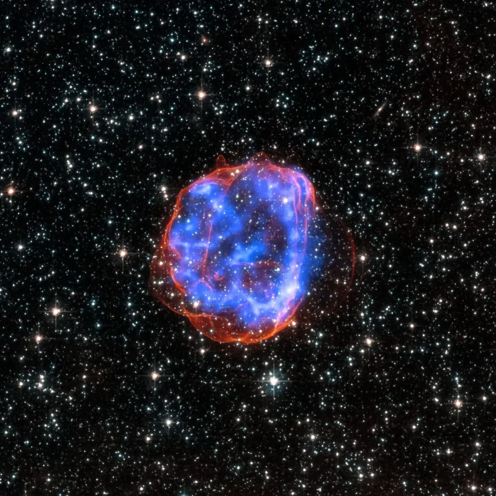
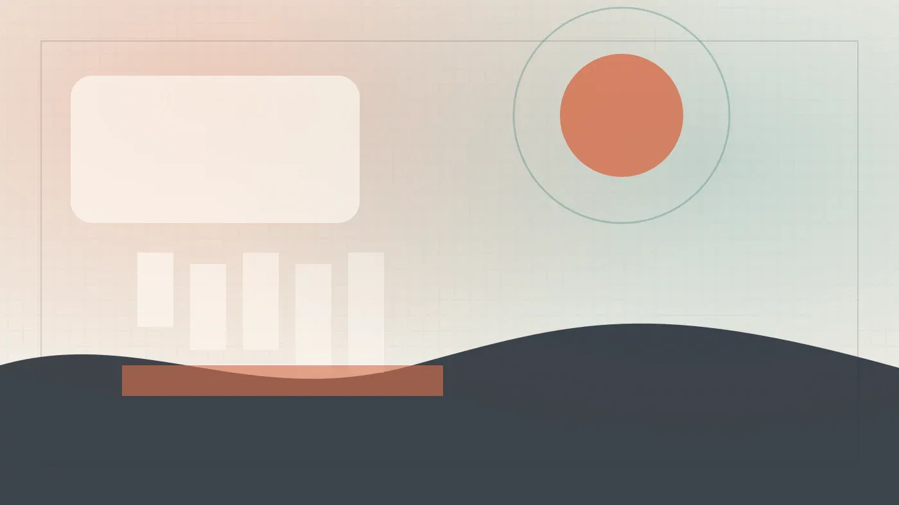

Индустрия
In the Weights проверяет, помнят ли вас языковые модели
Бывшие сотрудники OpenAI запустили In the Weights — сайт, показывающий, насколько хорошо языковые модели помнят пользователей без веб-поиска.
TechCrunch AI
20 июн. 2026 г.Сохранённые материалы за этот день.
10 материалов
Бывшие сотрудники OpenAI запустили In the Weights — сайт, показывающий, насколько хорошо языковые модели помнят пользователей без веб-поиска.

Журналисты собрали датасеты с Lady Gaga и Radiohead – проверьте, чья музыка попала в тренировку ИИ

Нобелевский лауреат Джон Джампер покинул DeepMind и перешёл в Anthropic — новый этап в гонке ИИ-талантов.

OpenAI Codex научился запоминать рабочие процессы и повторять их автоматически после одного показа.

Могут ли черные дыры на самом деле быть гравастарами? Новое исследование предлагает альтернативу.

Как LLM правит код сайта без доступа к продакшену — архитектура MCP-сервера и разделение контента и кода.

OpenAI централизовала управление задачами в ChatGPT: новый раздел 'Scheduled' позволяет гибко настраивать повторяющиеся действия.

OpenAI втрое нарастила выручку до $5,7 млрд, но потратила $3,7 млрд — половина ушла на компенсации акциями.

США впервые применили экспортные ограничения к мощным ИИ-моделям — на примере Anthropic и её продуктов Mythos и Fable.

cocoindex-code — семантический поиск по коду без Docker и API-ключей, ставится за две команды.